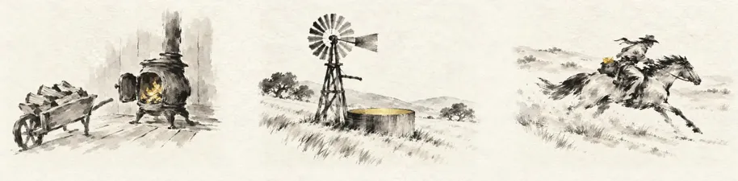
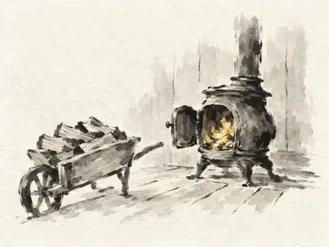
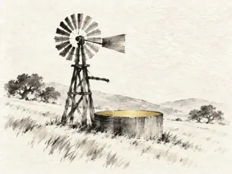
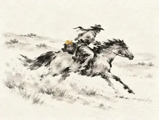
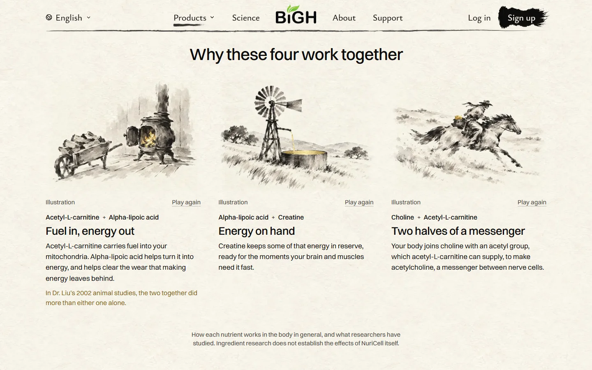
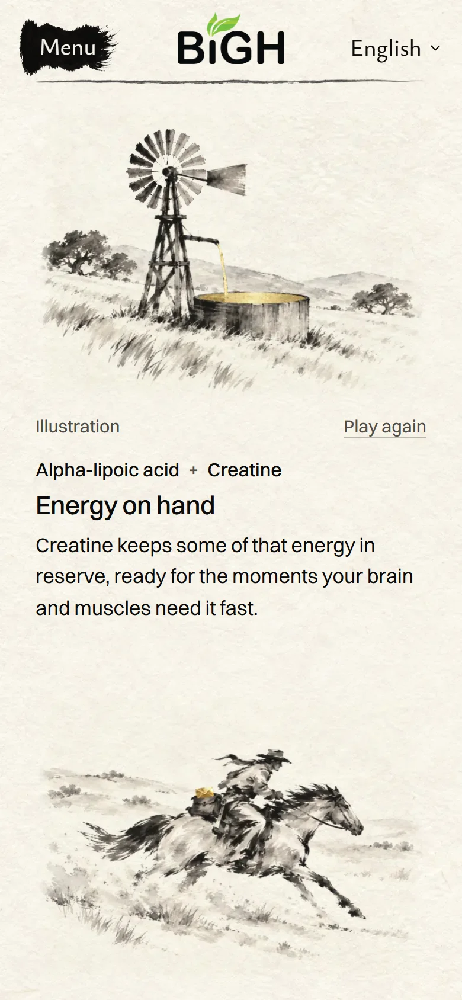

<title>NuriCell Ranch Built</title>
<meta name="claude:viewport-fit-sides" content="cover">
<link rel="preconnect" href="https://fonts.googleapis.com">
<link rel="preconnect" href="https://fonts.gstatic.com" crossorigin>
<link rel="stylesheet" href="https://fonts.googleapis.com/css2?family=Ysabeau:wght@400;500&family=Instrument+Sans:wght@400;500;600&display=swap">
<style>
  /* Layout: one column on the site's rice paper. The three scenes moving (recorded from the built
     site), desktop then phone, then stills at full size. One light world, like the site, so it keeps
     its own colours in a dark viewer. */
  :root {
    --paper: #f8f3ea;
    --ink: #0c0b0a;
    --muted: #514e48;
    --line: rgba(28, 27, 25, 0.16);
    --gold-ink: #7d5f1c;
    --title: "Ysabeau", "Iowan Old Style", "Palatino Linotype", Georgia, serif;
    --body: "Instrument Sans", system-ui, -apple-system, "Segoe UI", Roboto, sans-serif;
    color-scheme: light;
  }
  *, *::before, *::after { box-sizing: border-box; }
  body { margin: 0; background: var(--paper) url("art/paper.webp") 0 0 / 800px 800px repeat; color: var(--ink); font: 18px/1.6 var(--body); -webkit-font-smoothing: antialiased; }
  h1, h2, p, ul, figure { margin: 0; }
  .page {
    max-width: 1100px; margin: 0 auto; display: grid; gap: 56px;
    padding-left: max(16px, env(safe-area-inset-left, 0px));
    padding-right: max(16px, env(safe-area-inset-right, 0px));
    padding-block: 40px 96px;
  }
  .tag { font-size: 0.82rem; letter-spacing: 0.09em; text-transform: uppercase; color: var(--gold-ink); }
  header { display: grid; gap: 12px; max-width: 42rem; }
  h1 { font: 500 clamp(2rem, 5vw, 3rem)/1.08 var(--title); text-wrap: balance; }
  h2 { font: 500 clamp(1.5rem, 3.4vw, 2rem)/1.15 var(--title); }
  header p, .note, figcaption { color: var(--muted); }
  section { display: grid; gap: 16px; border-top: 1px solid var(--line); padding-top: 28px; }
  img { display: block; width: 100%; max-width: 100%; height: auto; }
  .shot { border: 1px solid var(--line); background: var(--paper); }
  .clips { display: grid; gap: 28px; }
  @media (min-width: 820px) { .clips { grid-template-columns: repeat(3, minmax(0, 1fr)); } }
  .clips img { mix-blend-mode: multiply; }
  .phone { max-width: 390px; }
  .pair { display: grid; gap: 24px; }
  @media (min-width: 820px) { .pair { grid-template-columns: minmax(0, 1.7fr) minmax(0, 1fr); align-items: start; } }
  figcaption { font-size: 0.92rem; margin-top: 6px; }
  ul { padding-left: 1.2em; display: grid; gap: 6px; }
</style>

<main class="page">
  <header>
    <p class="tag">NuriCell · Why these four work together · built</p>
    <h1>Your pick B, on the real page</h1>
    <p>Recorded from the built site on this computer. Not live yet: nothing is pushed.</p>
  </header>

  <section>
    <h2>Desktop</h2>
    
    <p class="note">They play one after another as the row comes into view: the light runs up the stove’s fire, the windmill’s wheel turns while its water pours and light spreads across the tank, the light crosses the rider’s letter. Then they rest.</p>
  </section>

  <section>
    <h2>Phone</h2>
    <div class="clips">
      <figure><figcaption>Fuel in, energy out</figcaption></figure>
      <figure><figcaption>Energy on hand</figcaption></figure>
      <figure><figcaption>Two halves of a messenger</figcaption></figure>
    </div>
    <p class="note">On a phone each scene plays as it scrolls into view. “Play again” under each one plays it once more.</p>
  </section>

  <section>
    <h2>Stills, full size</h2>
    <div class="pair">
      <figure><figcaption>Desktop 1440, at rest</figcaption></figure>
      <figure class="phone"><figcaption>Phone, the windmill</figcaption></figure>
    </div>
  </section>

  <section>
    <h2>What changed</h2>
    <ul>
      <li>No powder anywhere in this part. The words did not change.</li>
      <li>The pair’s names now sit under each painting, in the order you read them. The stove painting is flipped so the wood comes first.</li>
      <li>The windmill’s wheel turns over a second Codex painting of the same scene without the wheel, so the tower behind it is real brushwork.</li>
    </ul>
  </section>
</main>
